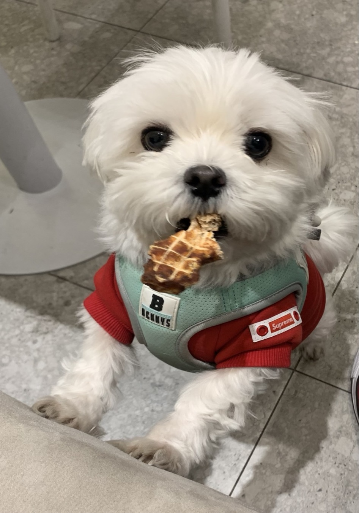

시작글
안녕하세요?
GDSC KNU 프론트엔드 4팀의 이승운입니다.
이번 토이프로젝트로 개인 블로그를 만들어봤습니다.
기본적인 틀은 이번 스터디를 통해 배운 Html과 CSS를 통해 작성하였으며,
자바 스크립트를 활용한 애니메이션을 적용해봤습니다.
미숙하지만 열심히 만들어보았습니다...ㅜㅜ
이상으로 글을 마칩니다.
- 생년월일 : 2000년 07월 22일
- 이름 : 이승운
- 거주지 : 경북대학교 북문근처
- 이메일 : family5820@knu.ac.kr